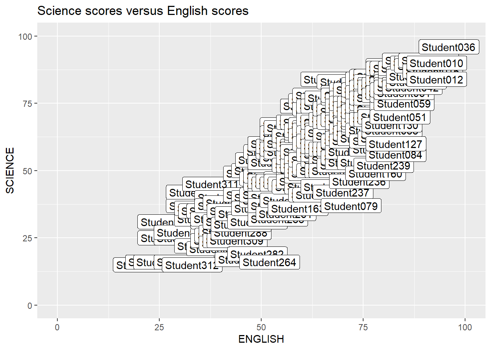

pacman::p_load(ggrepel, patchwork,
ggthemes, hrbrthemes,
tidyverse)Hands-on Exercise 2
Beyond ggplot2 Fundamentals
1 Overview
In this exercises I will practice using ggplot2 to create elegant and effective statistical graphics, achieving the following:
- control the placement of annotation on a graph by using functions provided in ggrepel package,
- create professional publication quality figure by using functions provided in ggthemes and hrbrthemes packages,
- plot composite figure by combining ggplot2 graphs by using patchwork package.
2 Getting started
2.1 Loading libraries
The following libraries will be used
ggrepel: an R package provides geoms for ggplot2 to repel overlapping text labels.ggthemes: an R package provides some extra themes, geoms, and scales for ‘ggplot2’.hrbrthemes: an R package provides typography-centric themes and theme components for ggplot2.patchwork: an R package for preparing composite figure created using ggplot2.
2.2 Importing data
The data used is the year end examination grades of a cohort of primary 3 students from a local school. From Hands-On Exercise 1, we know that the data has:
- Four categorical attributes: ID, CLASS, GENDER, RACE
- Three continuous attributes: MATHS, ENGLISH, SCIENCE
exam_data <- read_csv("data/Exam_data.csv")3 Annotation of plots
3.1 Using Text geoms in ggplot2
Annotation of statistical graphs can be done by using text geoms like geom_text() or geom_label() (has rectangle behind the text) as shown below.
ggplot(data=exam_data,
aes(x= ENGLISH,
y=SCIENCE)) +
geom_point() +
geom_text(mapping = aes(label = ID)) +
coord_cartesian(xlim=c(0,100),
ylim=c(0,100)) +
ggtitle("Science scores versus English scores")
ggplot(data=exam_data,
aes(x= ENGLISH,
y=SCIENCE)) +
geom_point() +
geom_label(mapping = aes(label = ID)) +
coord_cartesian(xlim=c(0,100),
ylim=c(0,100)) +
ggtitle("Science scores versus English scores")3.2 Using ggrepel
ggrepel helps to repel overlapping text. Simply replace geom_text() by geom_text_repel() and geom_label() by geom_label_repel().
ggplot(data=exam_data,
aes(x= ENGLISH,
y=SCIENCE)) +
geom_point() +
geom_text_repel(mapping = aes(label = ID)) +
coord_cartesian(xlim=c(0,100),
ylim=c(0,100)) +
ggtitle("Science scores versus English scores")ggplot(data=exam_data,
aes(x= ENGLISH,
y=SCIENCE)) +
geom_point() +
geom_label_repel(mapping = aes(label = ID),
max.overlaps = getOption("ggrepel.max.overlaps", default = 20)) +
coord_cartesian(xlim=c(0,100),
ylim=c(0,100)) +
ggtitle("Science scores versus English scores")
Warning
Note how when there are too many data points (320 in this case), the labels that overlap cannot be labeled. Consider varying the number of overlaps allowed in the option for max.overlaps. The default value is 10.
4 Themes
4.1 ggplot2 themes
As explored in Hands-on Exercise 1, there are several themes in ggplot2. Below is an example.
Using theme_bw() theme.
ggplot(data=exam_data) +
geom_point(aes(x = ENGLISH, y = SCIENCE, colour = RACE)) +
theme_bw() +
coord_cartesian(xlim=c(0,100),
ylim=c(0,100)) +
ggtitle("Science scores versus English scores, with race perspective")4.2 Using ggthemes
The list of themes available from the ggthemes() package can be found at this link.
Using theme_fivethirtyeight().
ggplot(data=exam_data) +
geom_point(aes(x = ENGLISH, y = SCIENCE, colour = RACE)) +
theme_economist() +
coord_cartesian(xlim=c(0,100),
ylim=c(0,100)) +
ggtitle("Science scores versus English scores, with race perspective")4.3 Using hrbthemes
With this package we can edit typographic elements such as placement of labels or fonts used.
ggplot(data=exam_data) +
geom_point(aes(x = ENGLISH, y = SCIENCE, colour = RACE)) +
theme_ipsum_rc(axis_title_size = 12,
plot_title_size = 14,
base_size = 10,
grid = "XY") + # gridlines for X and Y axis
ggtitle("Science scores versus English scores, with race perspective")5 Beyond Single Graph
5.1 Create individual plots
We will create the following plots:
- Distribution of Science scores
- Distribution of English scores
- Scatterplot for Science score versus English score
p1 <- ggplot(data=exam_data,
aes(x = SCIENCE)) +
geom_histogram(bins=20,
boundary = 100,
color="grey25",
fill="grey90") +
coord_cartesian(xlim=c(0,100)) +
ggtitle("Distribution of Science scores")
p1p2 <- ggplot(data=exam_data,
aes(x = ENGLISH)) +
geom_histogram(bins=20,
boundary = 100,
color="grey25",
fill="grey90") +
coord_cartesian(xlim=c(0,100)) +
ggtitle("Distribution of English scores")
p2
p3 <- ggplot(data=exam_data,
aes(x = ENGLISH, y = SCIENCE)) +
geom_point() +
geom_smooth(method=lm,
linewidth=0.5) +
coord_cartesian(xlim=c(0,100),
ylim=c(0,100)) +
ggtitle("Science scores versus English scores")
p35.2 Creating Composite Graphics: pathwork methods
Patchwork package has a very simple syntax where we can create layouts super easily. Here’s the general syntax that combines:
- Two-Column Layout using the Plus Sign +.
- Parenthesis () to create a subplot group.
- Two-Row Layout using the Division Sign /
p1+p2(p1 / p2) | p3Observe that the plots are now numbered by Roman numerals:
((p1 / p2) | p3) +
plot_annotation(tag_levels = 'I')
To place plots freely on top or below of other plots.
p3 + inset_element(p2,
left = 0.02,
bottom = 0.7,
right = 0.5,
top = 1)patchwork <- (p1 / p2) | p3
patchwork & theme_economist()